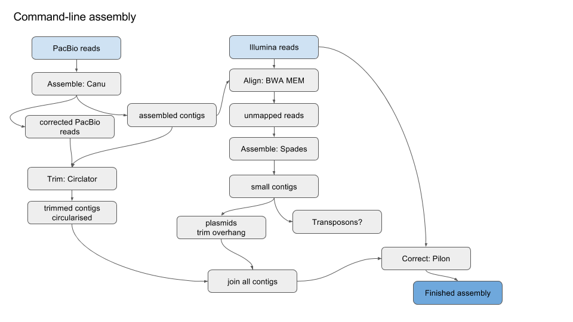
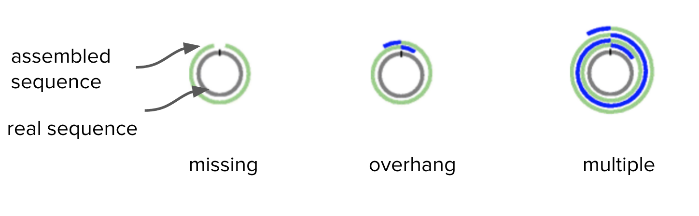
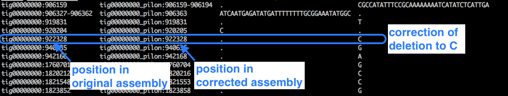

Pacbio reads: assembly with command line tools
Keywords: de novo assembly, PacBio, PacificBiosciences, Illumina, command line, Canu, Circlator, BWA, Spades, Pilon, Microbial Genomics Virtual Laboratory
This tutorial demonstrates how to use long Pacbio sequence reads to assemble a bacterial genome, including correcting the assembly with short Illumina reads.
Author Information
Primary Author(s): Anna Syme Melbourne Bioinformatics
Resources
Tools (and versions) used in this tutorial include:
- canu 1.5 [recently updated]
- infoseq and sizeseq (part of EMBOSS) 6.6.0.0
- circlator 1.5.1 [recently updated]
- bwa 0.7.15
- samtools 1.3.1
- makeblastdb and blastn (part of blast) 2.4.0+
- pilon 1.20
Learning objectives
At the end of this tutorial, be able to:
- Assemble and circularise a bacterial genome from PacBio sequence data.
- Recover small plasmids missed by long read sequencing, using Illumina data
- Explore the effect of polishing assembled sequences with a different data set.
Overview
Simplified version of workflow:

Get data
The files we need are here [ In a new tab, go to https://doi.org/10.5281/zenodo.1009308]:
pacbio.fq : the PacBio readsR1.fq : the Illumina forward readsR2.fq : the Illumina reverse reads
If you already have the files, skip forward to next section, Assemble.
Otherwise, this section has information about how to find and move the files:
PacBio and Illumina files
In a new tab, go to https://doi.org/10.5281/zenodo.1009308.
Next to the first file, right-click (or control-click) the “Download” button, and select “Copy link address”. Back in your terminal, enter
wget [paste link URL for file]
mv R1.fq\?download\=1 R1.fq
mv R2.fq\?download\=1 R2.fq
mv pacbio.fq\?download\=1 pacbio.fq
Type in ls to check the files are present and correctly-named.
We should have R1.fq, R2.fq and pacbio.fq.
cd denovo-canu
ls
Sample information
The sample used in this tutorial is a gram-positive bacteria called Staphylococcus aureus (sample number 25747). This particular sample is from a strain that is resistant to the antibiotic methicillin (a type of penicillin). It is also called MRSA: methicillin-resistant Staphylococcus aureus. It was isolated from (human) blood and caused bacteraemia, an infection of the bloodstream.
Assemble
- We will use the assembly software called Canu.
- Run Canu with these commands:
canu -p canu -d canu_outdir genomeSize=0.03m -pacbio-raw pacbio.fq
- the first
canutells the program to run -p canunames prefix for output files (“canu”)-d canu_outdirnames output directory (“canu_outdir”)-
genomeSizeonly has to be approximate.- e.g. Staphylococcus aureus, 2.8m
- e.g. Streptococcus pyogenes, 1.8m
- (In this case we are using a partial genome of expected size 30,000 base pairs).
-
Canu will correct, trim and assemble the reads.
- Various output will be displayed on the screen.
Check the output
Move into ls to see the output files.
- The
canu.contigs.fasta are the assembled sequences. - The
canu.unassembled.fasta are the reads that could not be assembled. - The
canu.correctedReads.fasta.gz are the corrected Pacbio reads that were used in the assembly. - The
canu.file.gfa is the graph of the assembly. - Display summary information about the contigs: (
infoseqis a tool from EMBOSS)
infoseq canu.contigs.fasta
- This will show the contigs found by Canu. e.g.,
- tig00000001 47997
- This will show the contigs found by Canu. e.g., tig00000001 47997 -“tig00000001” is the name given to the contig -“47997” is the number of base pairs in that contig.
This matches what we were expecting for this sample (approximately 30,000 base pairs). For other data, Canu may not be able to join all the reads into one contig, so there may be several contigs in the output.
We should also look at the canu.report. To do this:
less canu.report
less is a command to display the file on the screen.
- Use the up and down arrows to scroll up and down.
- You will see lots of histograms of read lengths before and after processing, final contig construction, etc.
- For a description of the outputs that Canu produces, see: http://canu.readthedocs.io/en/latest/tutorial.html#outputs
- Type q to exit viewing the report
Change Canu parameters if required
If the assembly is poor with many contigs, re-run Canu with extra sensitivity parameters; e.g.
canu -p prefix -d outdir corMhapSensitivity=high corMinCoverage=0 genomeSize=.03m -pacbio-raw pacbio.fq
Questions
Q: How do long- and short-read assembly methods differ? A: short reads: De Bruijn graphs; long reads: a move back towards simpler overlap-layout-consensus methods.
Q: Where can we find out the what the approximate genome size should be for the species being assembled? A: NCBI Genomes - enter species name - click on Genome Assembly and Annotation report - sort table by clicking on the column header Size (Mb) - look at range of sizes in this column.
Q: In the assembly output, what are the unassembled reads? Why are they there?
Q: What are the corrected reads? How did canu correct the reads?
Q: Where could you view the output .gfa and what would it show?
Trim and circularise
Run Circlator
Circlator identifies and trims overhangs (on chromosomes and plasmids) and orients the start position at an appropriate gene (e.g. dnaA). It takes in the assembled contigs from Canu, as well as the corrected reads prepared by Canu.
Overhangs are shown in blue:
 Adapted from Figure 1. Hunt et al. Genome Biology 2015
Move back into your main analysis folder.
Run Circlator:
circlator all --threads 8 --verbose canu_outdir/canu.contigs.fasta canu_outdir/canu.correctedReads.fasta.gz circlator_outdir
--threadsis the number of cores: change this to an appropriate number--verboseprints progress information to the screencanu_outdir/canu.contigs.fastais the file path to the input Canu assemblycanu_outdir/canu.correctedReads.fasta.gzis the file path to the corrected Pacbio reads - note, fastA not fastQcirclator_outdiris the name of the output directory.
Some output will print to screen. When finished, it should say “Circularized x of x contig(s)”.
Check the output
Move into the ls to list files.
Were the contigs circularised? :
less 04.merge.circularise.log
- Yes, the contig was circularised (last column).
- Type “q” to exit.
Where were the contigs oriented (which gene)? :
less 06.fixstart.log
What are the trimmed contig sizes? :
infoseq 06.fixstart.fasta
- tig00000001 30019 (bases trimmed)
This trimmed part is the overlap.
Re-name the contigs file:
- The trimmed contigs are in the file called
06.fixstart.fasta . - Re-name it
contig1.fasta :
mv 06.fixstart.fasta contig1.fasta
Open this file in a text editor (e.g. nano: nano contig1.fasta) and change the header to “>chromosome”.
Move the file back into the main folder (mv contig1.fasta ../).
Options
If all the contigs have not circularised with Circlator, an option is to change the --b2r_length_cutoff setting to approximately 2X the average read depth.
Questions
Q: Were all the contigs circularised? Why/why not?
Q: Circlator can set the start of the sequence at a particular gene. Which gene does it use? Is this appropriate for all contigs? A: Uses dnaA for the chromosomal contig. For other contigs, uses a centrally-located gene. However, ideally, plasmids would be oriented on a gene such as repA. It is possible to provide a file to Circlator to do this.
Find smaller plasmids
Pacbio reads are long, and may have been longer than small plasmids. We will look for any small plasmids using the Illumina reads.
This section involves several steps:
- Use the Canu+Circlator output of a trimmed assembly contig.
- Map all the Illumina reads against this Pacbio-assembled contig.
- Extract any reads that didn’t map and assemble them together: this could be a plasmid, or part of a plasmid.
- Look for overhang: if found, trim.
Align Illumina reads to the PacBio contig
- Index the contigs file:
bwa index contig1.fasta
- Align Illumina reads using using bwa mem:
bwa mem -t 8 contig1.fasta R1.fq R2.fq | samtools sort > aln.bam
bwa memis the alignment tool-t 8is the number of cores: choose an appropriate numbercontig1.fastais the input assembly fileR1.fq R2.fqare the Illumina reads| samtools sortpipes the output to samtools to sort> aln.bamsends the alignment to the filealn.bam
Extract unmapped Illumina reads
- Index the alignment file:
samtools index aln.bam
- Extract the fastq files from the bam alignment - those reads that were unmapped to the Pacbio alignment - and save them in various “unmapped” files:
samtools fastq -f 4 -1 unmapped.R1.fastq -2 unmapped.R2.fastq -s unmapped.RS.fastq aln.bam
fastqis a command that coverts a.bam file into fastq format-f 4: only output unmapped reads-1: put R1 reads into a file calledunmapped.R1.fastq -2: put R2 reads into a file calledunmapped.R2.fastq -s: put singleton reads into a file calledunmapped.RS.fastq aln.bam: input alignment file
We now have three files of the unampped reads:
Assemble the unmapped reads
- Assemble with Spades:
spades.py -1 unmapped.R1.fastq -2 unmapped.R2.fastq -s unmapped.RS.fastq --careful --cov-cutoff auto -o spades_assembly
-1is input file forward-2is input file reverse-sis unpaired--carefulminimizes mismatches and short indels--cov-cutoff autocomputes the coverage threshold (rather than the default setting, “off”)-ois the output directory
Move into the output directory (
cd spades_assembly
infoseq contigs.fasta
Copy it to a new file:
cp contigs.fasta contig2.fasta
Trim the plasmid
To trim any overhang on this plasmid, we will blast the start of contig2 against itself.
- Take the start of the contig:
head -n 10 contig2.fasta > contig2.fa.head
- head -n 10 takes the first ten lines of
contig2.fasta >sends that output to a new file calledcontig2.fa.head - We want to see if it matches the end (overhang).
- Format the assembly file for blast:
makeblastdb -in contig2.fasta -dbtype nucl
-
Blast the start of the assembly (.head file) against all of the assembly:
blastn -query contig2.fa.head -db contig2.fasta -evalue 1e-3 -dust no -out contig2.bls -
blastnis the tool Blast, set as blastn to compare sequences of nucleotides to each other querysets the input sequence ascontig2.fa.head dbsets the database as that of the original sequencecontig2.fasta . We don’t have to specify the other files that were created when we formatted this file, but they need to present in our current directory.evalueis the number of hits expected by chance, here set as 1e-3dust noturns off the masking of low-complexity regions-
outsets the output file ascontig2.bls -
Look at
contig2.bls to see hits:
less contig2.bls
- The first hit is at start, as expected. We can see that “Query 1” (the start of the contig) is aligned to “Sbject 1” (the whole contig), for the first 540 bases.
- Scroll down with the down arrow.
- The second hit shows “Query 1” (the start of the contig) also matches to “Sbject 1” (the whole contig) at position 2253, all the way to the end, position 2359.
- This is the overhang.
- Trim to position 2252.
- Index the plasmid.fa file:
First, change the name of the contig within the file:
nano contig2.fasta
nano opens up a text editor.
- Use the arrow keys to navigate. (The mouse won’t work.)
- At the first line, delete the text, which will be something like >NODE_1_length_2359_cov_3.320333
- Type in >contig2
- Don’t forget the > symbol
- Press Control-X
- Save modified buffer ? - type Y
- Press the Enter key
Index the file (this will allow samtools to edit the file as it will have an index):
samtools faidx contig2.fasta
- Trim the contig:
samtools faidx contig2.fasta plasmid:1-2252 > plasmid.fa.trimmed -
plasmidis the name of the contig, and we want the sequence from 1-2252. -
Open this file in nano (
nano plasmid.fa.trimmed) and change the header to “>plasmid”, save. - We now have a trimmed plasmid.
- Move file back into main folder:
cp plasmid.fa.trimmed ../
- Move into the main folder.
Plasmid contig orientation
The bacterial chromosome was oriented at the gene dnaA. Plasmids are often oriented at the replication gene, but this is highly variable and there is no established convention. Here we will orient the plasmid at a gene found by Prodigal, in Circlator:
circlator fixstart plasmid.fa.trimmed plasmid_fixstart
fixstartis an option in Circlator just to orient a sequence.plasmid.fa.trimmedis our small plasmid.plasmid_fixstartis the prefix for the output files.
View the output:
less plasmid_fixstart.log
- The plasmid has been oriented at a gene predicted by Prodigal, and the break-point is at position 1200.
- Change the file name:
cp plasmid_fixstart.fasta contig2.fasta
Collect contigs
cat contig1.fasta contig2.fasta > genome.fasta
-
See the contigs and sizes:
infoseq genome.fasta -
chromosome: 2823331
- plasmid: 2473
Questions
Q: Why is this section so complicated? A: Finding small plasmids is difficult for many reasons! This paper has a nice summary: On the (im)possibility to reconstruct plasmids from whole genome short-read sequencing data. doi: https://doi.org/10.1101/086744
Q: Why can PacBio sequencing miss small plasmids? A: Library prep size selection
Q: We extract unmapped Illumina reads and assemble these to find small plasmids. What could they be missing? A: Repeats that have mapped to the PacBio assembly.
Q: How do you find a plasmid in a Bandage graph? A: It is probably circular, matches the size of a known plasmid, has a rep gene…
Q: Are there easier ways to find plasmids? A: Possibly. One option is the program called Unicycler which may automate many of these steps. https://github.com/rrwick/Unicycler
Correct
We will correct the Pacbio assembly with Illumina reads.
Make an alignment file
- Align the Illumina reads (R1 and R2) to the draft PacBio assembly, e.g.
genome.fasta :
bwa index genome.fasta
bwa mem -t 32 genome.fasta illumina_R1.fastq.gz illumina_R2.fastq.gz | samtools sort > aln.bam
-
-tis the number of cores: set this to an appropriate number. (To find out how many you have,grep -c processor /proc/cpuinfo). -
Index the files:
samtools index aln.bam
samtools faidx genome.fasta
- Now we have an alignment file to use in Pilon:
aln.bam
Run Pilon
- Run:
pilon --genome genome.fasta --frags aln.bam --output pilon1 --fix all --mindepth 0.5 --changes --verbose --threads 32
--genomeis the name of the input assembly to be corrected--fragsis the alignment of the reads against the assembly--outputis the name of the output prefix--fixis an option for types of corrections--mindepthgives a minimum read depth to use--changesproduces an output file of the changes made--verboseprints information to the screen during the run--threads: set this to an appropriate number
Look at the changes file:
less pilon1.changes
Example:

Look at the details of the fasta file:
infoseq pilon1.fasta
- chromosome - 2823340 (net +9 bases)
- plasmid - 2473 (no change)
Option:
If there are many changes, run Pilon again, using the
Genome output
- Change the file name:
cp pilon1.fasta assembly.fasta
- We now have the corrected genome assembly of Staphylococcus aureus in .fasta format, containing a chromosome and a small plasmid.
Questions
Q: Why don’t we correct earlier in the assembly process? A: We need to circularise the contigs and trim overhangs first.
Q: Why can we use some reads (Illumina) to correct other reads (PacBio) ? A: Illumina reads have higher accuracy
Q: Could we just use PacBio reads to assemble the genome? A: Yes, if accuracy adequate.
Short-read assembly: a comparison
So far, we have assembled the long PacBio reads into one contig (the chromosome) and found an additional plasmid in the Illumina short reads.
If we only had Illumina reads, we could also assemble these using the tool Spades.
You can try this here or try it later on your own data.
Get data
We will use the same Illumina data as we used above:
illumina_R1.fastq.gz : the Illumina forward readsillumina_R2.fastq.gz : the Illumina reverse reads
Assemble
Run Spades:
spades.py -1 illumina_R1.fastq.gz -2 illumina_R2.fastq.gz --careful --cov-cutoff auto -o spades_assembly_all_illumina
-1is input file of forward reads-2is input file of reverse reads--carefulminimizes mismatches and short indels--cov-cutoff autocomputes the coverage threshold (rather than the default setting, “off”)-ois the output directory
Results
Move into the output directory and look at the contigs:
infoseq contigs.fasta
Questions
How many contigs were found by Spades?
- many
How does this compare to the number of contigs found by assembling the long read data with Canu?
- many more.
Does it matter that an assembly is in many contigs?
-
Yes
-
broken genes => missing/incorrect annotations
-
less information about structure: e.g. number of plasmids
-
No
-
Many or all genes may still be annotated
- Gene location is useful (e.g. chromosome, plasmid1) but not always essential (e.g. presence/absence of particular resistance genes)
How can we get more information about the assembly from Spades?
- Look at the assembly graph
assembly_graph.fastg , e.g. in the program Bandage. This shows how contigs are related, albeit with ambiguity in some places.
Next
Further analyses
- Annotate with Prokka.
- Comparative genomics, e.g. with Roary.
Links
- Details of bas.h5 files
- Canu manual and gitub repository
- Circlator article and github repository
- Pilon article and github repository
- Notes on finishing and evaluating assemblies.